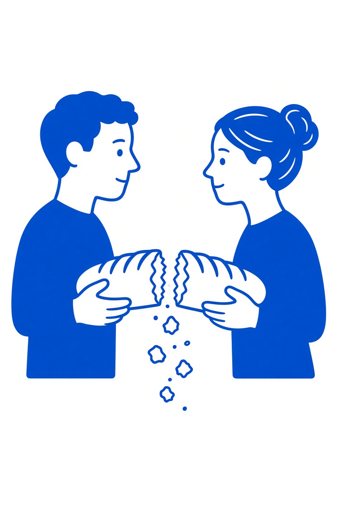
delen
to share
regelmatigrang 323Money & tradegetekend
- Scene
- two adults stand close together facing each other and each grips one half of the same long loaf of bread, both hands on it. The loaf is at the moment of breaking, one end tilted away and a few crumbs falling between them. Both look at the bread.
- Must read
- two pairs of hands breaking one loaf apart between them.
- Avoid
- a slice held out in one hand towards another person (geven); coins and notes on a table between two people (betalen); an apple bag held out over a market stall (verkopen); one adult carrying a full box alone (dragen).
- Alt text
- Twee volwassenen houden samen een brood vast en breken het midden door; kruimels vallen.
- Example
- Wij delen een pizza.
We share a pizza.
delen.png · rang 323 · A1 regelmatig · lexicon woorden.tsv

sturen
to send
regelmatigrang 532Movement & positiongetekend
- Scene
- one adult in a post office holds an envelope above the slot of a postbox, the flap down and the lower edge just touching the opening; the fingers still hold it and it has not gone in. A second letter lies on a counter behind them, and no other person is present.
- Must read
- an envelope held at the mouth of a postbox, not yet dropped.
- Avoid
- a cardboard box carried with both hands towards a half-open door (brengen); a box passing between two hands (geven); a letter laid flat on a table and let go (leggen); a phone at the ear (bellen).
- Alt text
- Iemand houdt een envelop boven de gleuf van een brievenbus, nog niet losgelaten.
- Example
- Ik stuur een bericht naar mijn vriend.
I send a message to my friend.
sturen.png · rang 532 · A1 regelmatig · lexicon woorden.tsv

voelen
to feel
regelmatigrang 565Emotion & feelinggetekend
- Scene
- one adult sits on the edge of a bed with both eyes closed and one open palm pressed flat on a thick woollen scarf lying across the lap; the fingers are spread and the thumb rubs the cloth. Nothing is written or numbered, and no second person is present.
- Must read
- an open palm pressed flat on cloth, with the eyes closed.
- Avoid
- an open palm on one's own chest (zijn); a cupped hand behind an ear (horen); a hand flat against a closed door (slaan); a palm held out flat over a radiator.
- Alt text
- Iemand zit op een bed en strijkt met een vlakke hand over een dikke sjaal.
- Example
- Ik voel me vandaag moe.
I feel tired today.
voelen.png · rang 565 · A1 regelmatig · lexicon woorden.tsv

leggen
to lay (flat)
regelmatigrang 601Movement & positiongetekend
- Scene
- one adult sits at a plain table and lays a flat white cloth down so that it lies flat on the table top, one hand still smoothing the last corner; a second folded cloth lies flat beside the first. The cloth is on the surface, not in the air.
- Must read
- a cloth lying flat on the table while a hand smooths it down.
- Avoid
- a glass lowered onto a table with the hand still round it (zetten); a folded cloth seen from above in a row (vouwen); a cloth lifted off the table (pakken); a cloth hung over the back of a chair (hangen).
- Contrast
- Pair with zetten. Same hand on the same table: the object lies flat under a smoothing palm here, it stands upright as its base lands there.
- Alt text
- Iemand strijkt op een tafel een doek plat neer; ernaast ligt een tweede doek.
- Example
- Ik leg de krant op tafel.
I put the newspaper on the table.
leggen.png · rang 601 · A1 regelmatig · lexicon woorden.tsv
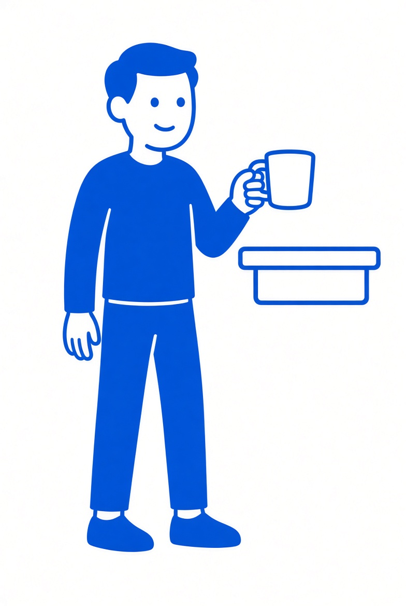
pakken
to grab
regelmatigrang 616Abstract & generalgetekend
- Scene
- one adult stands at a shelf and closes one hand around the handle of a mug, the mug lifted a hand's width clear of the shelf and the arm drawn back; the other hand hangs empty at the side. Only that one mug is lifted, and the shelf holds no other cup.
- Must read
- a mug lifted clear off a shelf in one closed hand.
- Avoid
- a bottle carried back through a door to a waiting person (halen); a box carried in both arms across the room (dragen); a note pushed along a counter (betalen); both hands laid flat on a full crate (gebruiken).
- Alt text
- Iemand sluit een hand om een mok op een schap en trekt die naar zich toe.
- Example
- Ik pak mijn jas van de stoel.
I grab my coat from the chair.
pakken.png · rang 616 · A1 regelmatig · lexicon woorden.tsv

bouwen
to build
regelmatigrang 658Abstract & generalgetekend
- Scene
- one adult in a hard hat kneels on the floor and lowers a new house brick with both hands so a tower of four bricks stands beside it; the older half of a brick wall with wet mortar and a trowel reaches in from the left edge. The new brick is halfway down.
- Must read
- a new brick being lowered onto a growing wall.
- Avoid
- three planks nailed into a crate at a table (maken); a small tree pressed into a garden hole (plaatsen); a closed machine case with a screwdriver in it (repareren); a finished house standing whole with a path (wonen).
- Contrast
- Pair with slopen. Same brick wall: a brick is lowered into place here, the sledgehammer knocks bricks out there.
- Alt text
- Iemand zet met twee handen een nieuwe steen op een muur die half af is.
- Example
- Zij bouwen een nieuw huis.
They are building a new house.
bouwen.png · rang 658 · A1 regelmatig · lexicon woorden.tsv
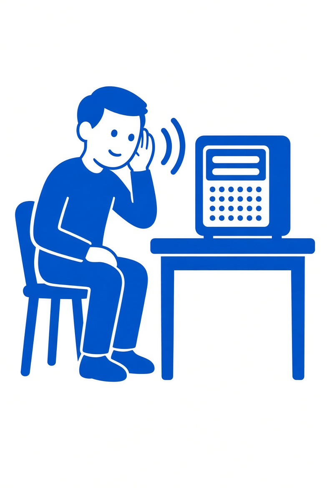
luisteren
to listen
regelmatigrang 726Communication & languagegetekend
- Scene
- one adult sits facing a small radio on a plain table, the body leaning in, one hand cupped behind an ear and the head tilted towards it. The radio gives off three bold curved lines. The person is alone and looks at nothing else in the room.
- Must read
- one adult leaning in with a hand behind the ear, facing a radio.
- Avoid
- two adults facing each other with open mouths and a bar above each head (praten); a head turned sharply from a book towards a ringing bell (horen); a phone held against the ear (bellen); a book open in the lap (lezen); letters on the radio.
- Contrast
- Pair with horen. Same adult in the same room: the body leans in with a hand behind the ear here, the head snaps round towards the sound there.
- Alt text
- Iemand zit voorover naar een radio en houdt een hand achter het oor.
- Example
- Wij luisteren naar de radio.
We listen to the radio.
luisteren.png · rang 726 · A1 regelmatig · lexicon woorden.tsv
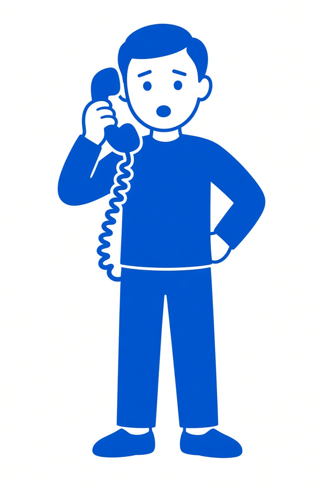
bellen
to call (by phone)
regelmatigrang 735Communication & languagegetekend
- Scene
- one adult stands facing the viewer with a telephone held hard against one ear by that hand, the elbow raised out to the side, the other hand pressed flat on the hip, the mouth open and the eyes narrowed. A curled cord runs down from the phone to a pocket.
- Must read
- one hand holding a phone clamped to the ear, the mouth open.
- Avoid
- two adults facing each other with a bar above each head (praten); a seated person under a long speech bubble addressing a listener (vertellen); one adult alone facing the viewer with a small bubble (spreken); a hand behind an ear while sitting at a radio (luisteren).
- Alt text
- Iemand houdt een telefoon tegen een oor, elleboog opzij, en praat met open mond.
- Example
- Ik bel mijn moeder vanavond.
I call my mother this evening.
bellen.png · rang 735 · A1 regelmatig · lexicon woorden.tsv
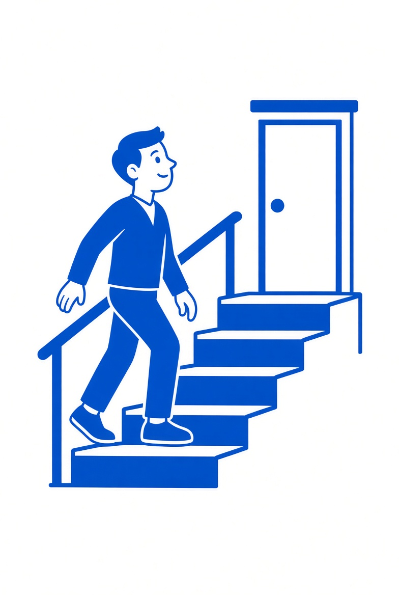
stappen
to step
regelmatigrang 790Movement & positiongetekend
- Scene
- one adult stands on the bottom step of a short flight of stairs with one foot planted on the step and the other foot just lifting off the pavement; one hand rests on the rail, the body is upright and the eyes are on the top landing with a closed door.
- Must read
- one foot lifting off the pavement onto the bottom stair.
- Avoid
- a raised hand touching the rail at the top of the stairs (bereiken); both feet on the floor and the body straight, no stairs (staan); a person crouching to tie a shoe; a treadmill belt with speed lines (rennen).
- Alt text
- Iemand zet een voet op de onderste tree van een trap, de andere komt van de stoep.
- Example
- Ik stap in de bus.
I get on the bus.
stappen.png · rang 790 · A1 regelmatig · lexicon woorden.tsv
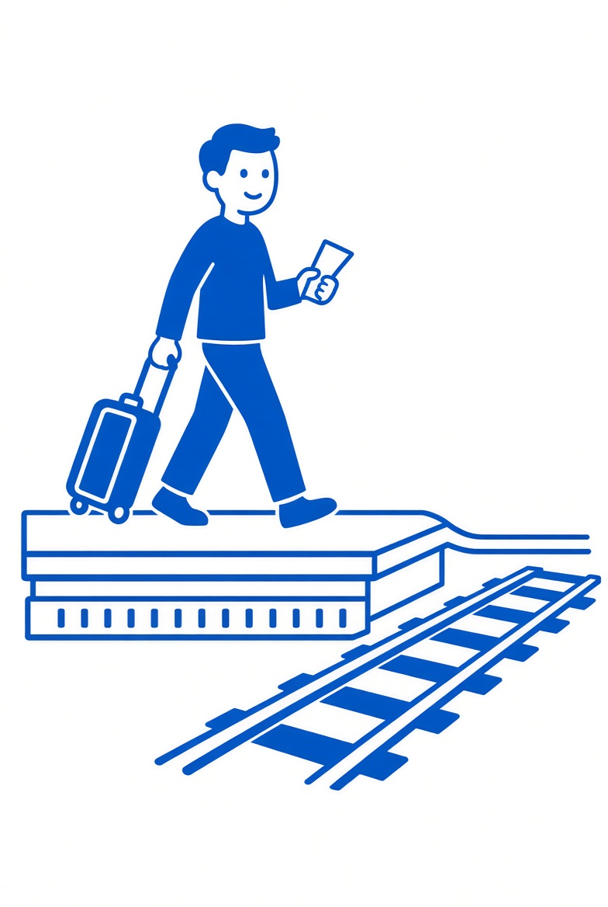
reizen
to travel
regelmatigrang 853Transport & travelgetekend
- Scene
- one adult walks along a station platform from left to right with a suitcase in one hand and a folded ticket in the other, the suitcase held low and trailing a few centimetres behind the leg; a single railway track with sleepers runs beside the platform, and no train is visible.
- Must read
- an adult crossing a platform with a suitcase beside an empty rail track.
- Avoid
- both hands on a steering wheel on a road (rijden); a pilot in an aeroplane between clouds (vliegen); an adult standing still under a clock on a platform (wachten); an adult climbing the bottom step with a suitcase (stappen).
- Alt text
- Iemand loopt met een koffer en een kaartje langs een perron, naast het spoor.
- Example
- Wij reizen met de trein naar Parijs.
We travel to Paris by train.
reizen.png · rang 853 · A1 regelmatig · lexicon woorden.tsv

vieren
to celebrate
regelmatigrang 931People & relationsgetekend
- Scene
- one adult stands in a room with both arms raised high and a wide open smile, holding a paper garland at waist height between the hands; a second adult beside them raises a glass, and a small cake with a single candle sits on a table. Plain paper garlands hang behind them.
- Must read
- a person with both arms up beside a cake and a raised glass.
- Avoid
- one adult with both arms up holding a gold cup (winnen); one person at a table with a tablecloth laid flat (leggen); a person behind a counter pushing notes into a till (verdienen); a ribbon across a road with a crowd.
- Alt text
- Iemand steekt de armen hoog met een slinger; ernaast heft iemand een glas bij een taart.
- Example
- Wij vieren morgen mijn verjaardag.
We are celebrating my birthday tomorrow.
vieren.png · rang 931 · A1 regelmatig · lexicon woorden.tsv
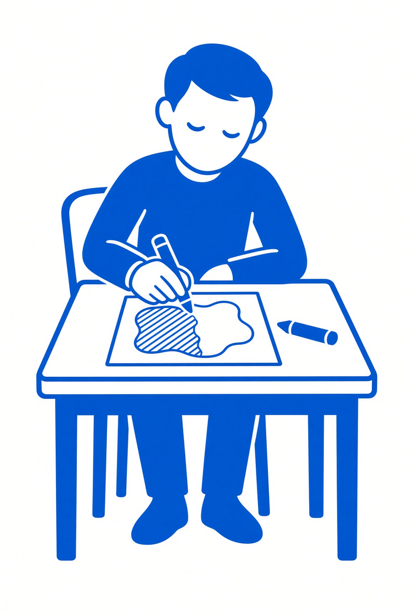
kleuren
to colour
regelmatigrang 1044Arts & mediagetekend
- Scene
- one adult sits at a plain table bent over a sheet with one large outline drawn on it, a crayon pressed to the paper and half the outline already filled with close hatching; a second crayon lies beside the sheet.
- Must read
- an outline half filled with hatching and one crayon pressed to the paper.
- Avoid
- a pencil scribbling a line that copies nothing (tekenen); four crayons lined up in a row (kiezen); an easel with a brush and wet paint (schilderen); a bucket of paint with a brush dipped in it; a colour chart.
- Alt text
- Iemand vult op papier een grote omtrek half met dichte arcering; een tweede krijtje ligt ernaast.
- Example
- De kinderen kleuren een plaatje.
The children colour a picture.
kleuren.png · rang 1044 · A1 regelmatig · lexicon woorden.tsv
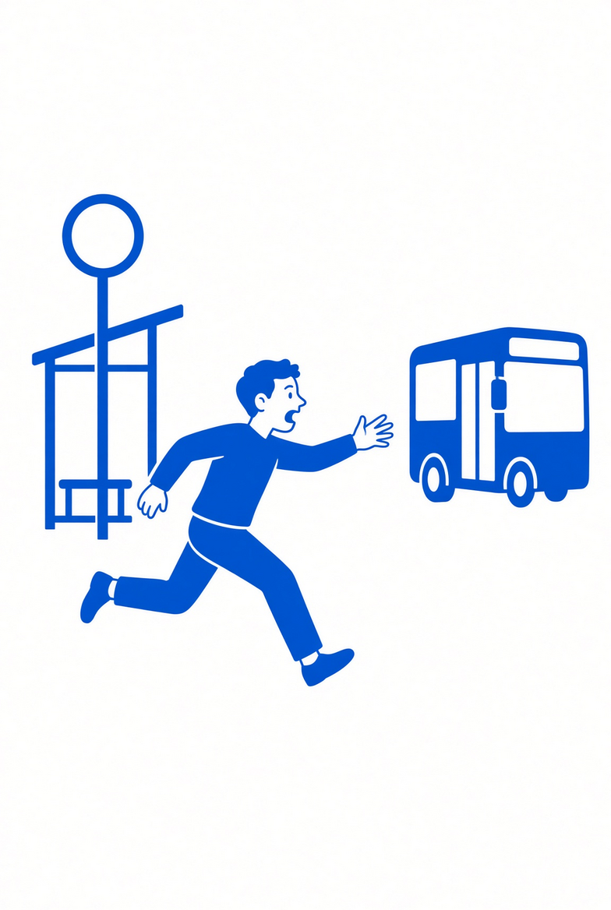
missen
to miss (a bus)
regelmatigrang 1046Abstract & generalgetekend
- Scene
- one adult runs onto an empty bus stop with one arm stretched out after a bus that has just pulled away, the bus already two lengths off at the right edge with its doors shut; the runner's mouth is open and the shoulders drop.
- Must read
- an arm stretched after a bus that has already left the stop.
- Avoid
- a person stepping up into an open bus door (instappen); a person standing calmly at the stop (wachten); a person running with nothing ahead (rennen); a hand waving goodbye at a window (zwaaien).
- Alt text
- Iemand rent een lege bushalte op en steekt een arm uit naar een bus die net wegrijdt.
- Example
- Ik ren, want ik wil de bus niet missen.
I am running because I do not want to miss the bus.
missen.png · rang 1046 · A1 regelmatig · lexicon woorden.tsv
geen beeld
missen (doel)
to miss (a target)
regelmatigrang 1046Abstract & general
- Scene
- One adult stands on grass with the arms still extended, just after shooting an arrow from a bow. The arrow flies past the left edge of a round target on a stand at the right. The target is untouched, and the adult looks at it, shoulders dropping.
- Must read
- an arrow passing beside a round target that is untouched.
- Avoid
- a person running after a bus that has left (missen); an arrow stuck in the centre of the target (raken); a ball kicked into a net (scoren); a person alone at a table looking at a photo (missen); a bow held but not fired.
- Alt text
- Een volwassene heeft net een pijl afgeschoten; hij vliegt langs de rand van een ronde schijf die niet geraakt is.
- Example
- Hij schiet en mist het doel op een meter.
He shoots and misses the target by a metre.
missen-doel.png · rang 1046 · A1 regelmatig · lexicon woorden.tsv
geen beeld
missen (persoon)
to miss (someone)
regelmatigrang 1046Abstract & general
- Scene
- One adult sits alone at a small table by a window, chin on one hand, looking sadly at a framed photograph of another person standing on the table. The chair opposite is empty and pulled out. Nothing else in the picture.
- Must read
- a person gazing at a photo beside an empty chair.
- Avoid
- a person running after a bus that has left (missen); two people hugging (houden van); a person waving at a departing train (zwaaien); a person asleep at the table (slapen); a phone call in progress (bellen).
- Alt text
- Iemand zit alleen aan een tafel bij het raam en kijkt naar een foto; de stoel ertegenover is leeg.
- Example
- Ik mis mijn vriendin, ze woont ver weg.
I miss my girlfriend, she lives far away.
missen-persoon.png · rang 1046 · A1 regelmatig · lexicon woorden.tsv
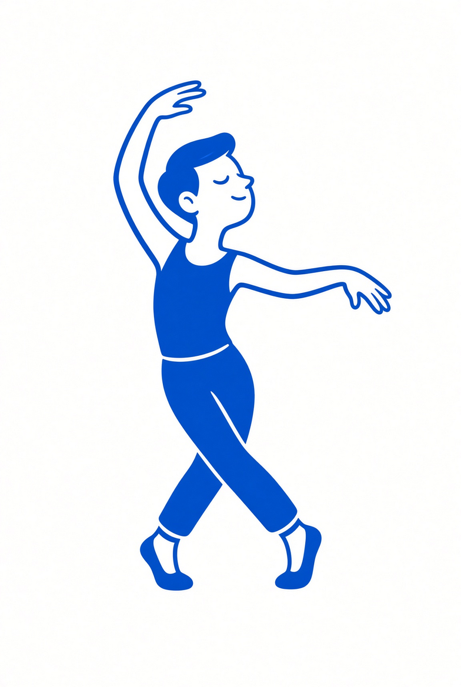
dansen
to dance
regelmatigrang 1087Arts & mediagetekend
- Scene
- one adult is caught mid-step with both heels lifted and the toes on the floor, the hips swung to one side, one arm curved up above the head and the other out to the side, chin up and eyes closed. Both feet stay near the floor and nothing else is in the picture.
- Must read
- one adult with both heels lifted, hips swung and one arm curved above the head.
- Avoid
- both feet off the ground with the body stretched up (springen); two people facing each other holding hands and turning in a circle (draaien); a person walking in a straight line past a chair (lopen); music notes in the air; a stage and a crowd.
- Alt text
- Een volwassene staat op de tenen met de heup opzij en een arm gebogen boven het hoofd.
- Example
- Wij dansen op het feest.
We dance at the party.
dansen.png · rang 1087 · A1 regelmatig · lexicon woorden.tsv
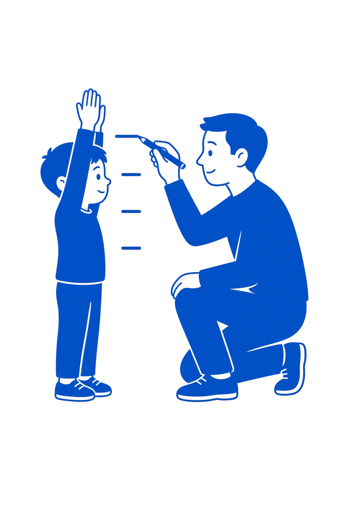
groeien
to grow
regelmatigrang 1233Plants & farminggetekend
- Scene
- one child stands with their back to a wall, full figure, head turned slightly towards the wall; the wall has no outline, border, frame or panel at all, it is just white space. Draw only ONE vertical column of four marks on the wall: the child's flat raised palm pressed on the wall at the very top of the head is the topmost mark and nothing is drawn above it; the new short horizontal stroke is the first mark directly below the palm, with the adult's pencil tip touching it; exactly three more short strokes of the same length lower down, at waist height. Four marks in total, none above the hand. An adult kneels beside the child without overlapping the child's legs. Nothing to the right of the hand except the pencil.
- Must read
- a child's flat hand on a wall while an adult draws the line under it.
- Avoid
- a small tree pressed into a garden hole (planten); seeds scattered over bare soil (zaaien); a scissors and a lock of hair (knippen); a tape measure held out; a row of numbered marks.
- Alt text
- Een kind staat tegen de muur; een volwassene zet een streep onder de hand op het hoofd.
- Example
- De planten groeien snel in de zomer.
The plants grow quickly in summer.
groeien.png · rang 1233 · A1 regelmatig · lexicon woorden.tsv
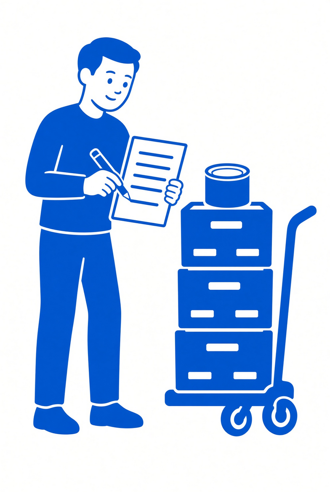
controleren
to check
regelmatigrang 1285Thought & knowledgegetekend
- Scene
- one adult holds a printed list in one hand and a pencil in the other, bending over three stacked crates on a hand truck, the pencil ticking the bottom line with the eyes on that line. A tin can stands open in the top crate.
- Must read
- a pencil ticking a list line above three stacked crates on a truck.
- Avoid
- one adult leaning close to a framed picture on a wall (bekijken); a person with an eye to a microscope (onderzoeken); a finger held up beside a standing person (antwoorden); a crossed-out page in a bin (verwijderen); letters on the list.
- Alt text
- Iemand buigt over drie kratten en zet met een potlood een streep op een lijst.
- Example
- De conducteur komt de kaartjes controleren.
The conductor comes to check the tickets.
controleren.png · rang 1285 · A1 regelmatig · lexicon woorden.tsv
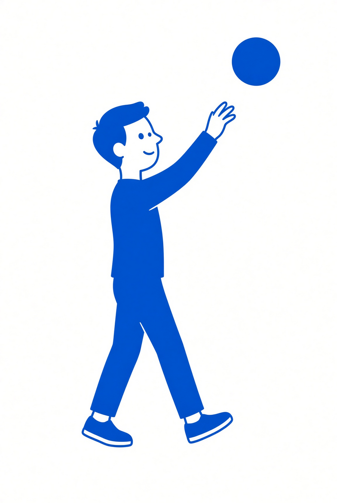
gooien
to throw
regelmatigrang 1288Movement & positiongetekend
- Scene
- one adult stands with the weight on the back foot, the front foot just lifting and the whole body turned sideways, one arm still stretched out high after the release and both eyes on a round ball already in the air a metre from the raised hand.
- Must read
- a ball in the air above a raised hand after the release.
- Avoid
- the ball still in both hands and only the arms lifting it (werpen); both hands cupped low and the ball just leaving the fingers (spelen); a ball in the air and a raised racket (slaan); a ball in a goal net; an arrow or a dotted arc.
- Contrast
- Pair with vangen. Same ball at the same height: it has just left one raised hand here, it sits between two cupped hands there.
- Alt text
- Een bal hangt in de lucht naast een hoog uitgestoken arm; de voet voor is net los.
- Example
- De jongen gooit de bal naar zijn vader.
The boy throws the ball to his father.
gooien.png · rang 1288 · A1 regelmatig · lexicon woorden.tsv
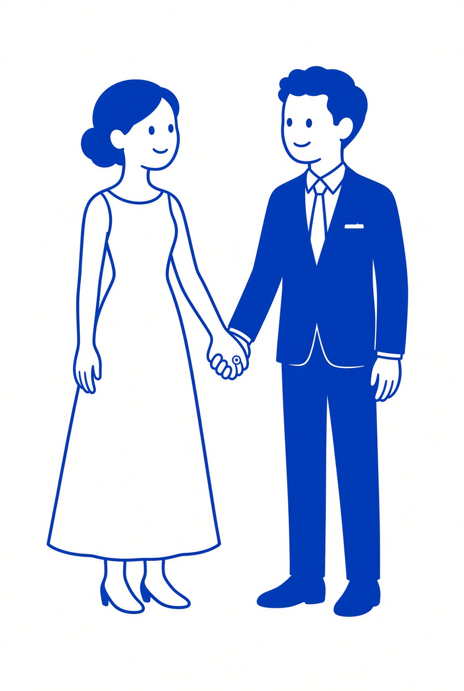
trouwen
to marry
regelmatigrang 1300People & relationsgetekend
- Scene
- two adults stand facing each other and hold hands, both smiling, and a thin ring sits on one of the joined fingers; the person on the left wears a plain white dress and the other a dark suit. Plain ground, no other person, no building.
- Must read
- two adults holding hands with a ring on one joined finger.
- Avoid
- two people facing each other with a sheet between their hands (tonen); a family sitting at a set table (vieren); two people at a counter with a pen and a notebook (melden); a church spire or a town hall; two boxes with a bow (cadeau).
- Alt text
- Twee volwassenen staan hand in hand met een ring aan een vinger.
- Example
- Mijn zus gaat volgend jaar trouwen.
My sister is going to get married next year.
trouwen.png · rang 1300 · A1 regelmatig · lexicon woorden.tsv
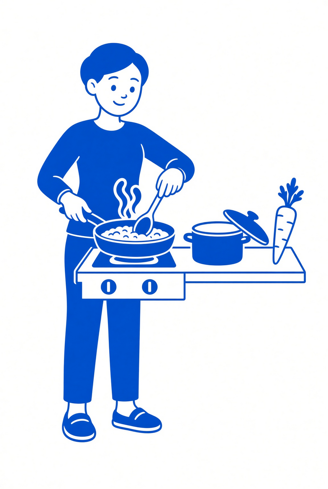
koken
to cook
regelmatigrang 1316Food & drinkgetekend
- Scene
- one adult stands at a stove with one hand holding the long handle of a pan while the other hand shakes a wooden spoon over it; steam rises in two bold curves, a pot lid lies to the side and a raw carrot stands on the counter.
- Must read
- nearly done food in a pan being stirred with a wooden spoon.
- Avoid
- a tray of round buns going into a closed oven (bakken); a person holding a piece of bread to an open mouth (eten); a kettle pouring into a cup (drinken); a waiter with a tray (dienen); a cookbook propped open.
- Contrast
- Pair with bakken. Same kitchen: the food turns in a pan on the hob here, a tin of batter goes into the open oven there.
- Alt text
- Iemand roert in een pan op het fornuis terwijl er stoom boven opstijgt; de steel in de andere hand.
- Example
- Mijn vader kookt vanavond macaroni.
My father is cooking macaroni tonight.
koken.png · rang 1316 · A1 regelmatig · lexicon woorden.tsv
geen beeld
koken (water)
to boil
regelmatigrang 1316Food & drink
- Scene
- A steel kettle stands on a hob with the flame lit beneath it. Large bubbles rise inside a clear glass pan beside it, and thick steam bursts from the spout of the kettle. There is no person in this picture, only the kettle and pan. No text, no numbers.
- Must read
- a kettle on a lit hob with steam bursting from the spout.
- Avoid
- a person stirring a pot with a spoon (koken); a cup of tea being poured out (schenken); an ice cube melting in a glass (smelten); a person touching a hot pan and pulling back (branden); a water tap running.
- Alt text
- Op een fornuis staat een ketel met vlammen eronder; er komt veel stoom uit en niemand is in beeld.
- Example
- Het water kookt, je kunt de thee zetten.
The water is boiling, you can make the tea.
koken-water.png · rang 1316 · A1 regelmatig · lexicon woorden.tsv
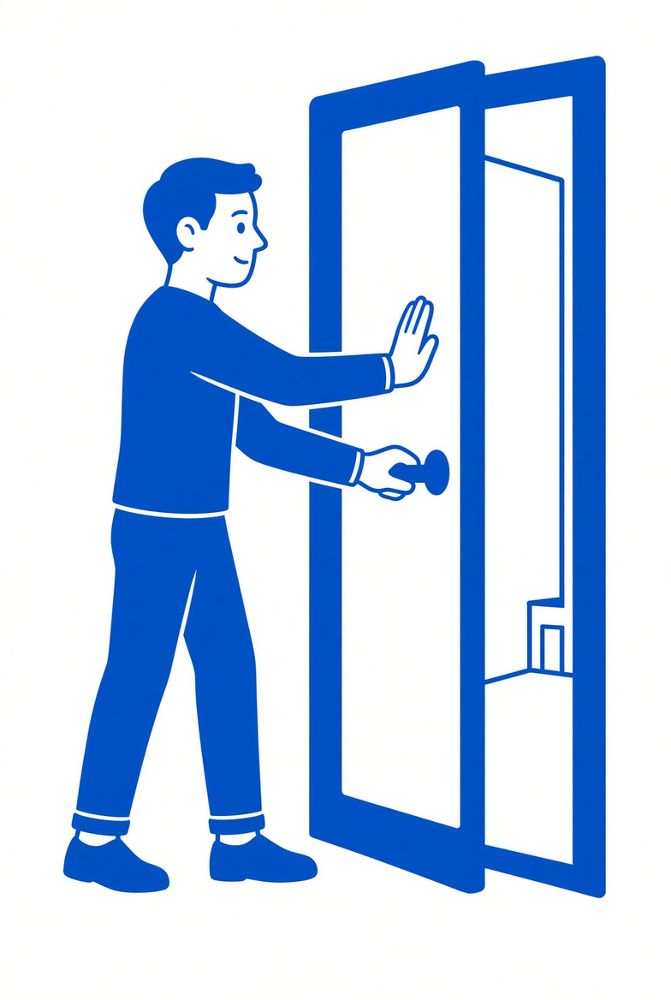
openen
to open
regelmatigrang 1320Movement & positiongetekend
- Scene
- one adult faces a closed door and pushes it with one flat hand on the panel while the other hand turns the handle; the gap at the edge is widening and a slice of the brighter room beyond shows through it. The person looks into that gap.
- Must read
- a widening gap of light at a door edge under one pushing palm.
- Avoid
- a door pushed from inside until nearly shut (sluiten); an envelope torn at one end (opendoen); a hand pressing a light switch; a key turned twice in a lock; a key held up in triumph (vinden).
- Contrast
- Pair with sluiten. Same door and the same flat palm: the gap widens to a band of light here, it narrows to a sliver there.
- Alt text
- Een hand duwt een deur van zich af; door de brede kier valt licht naar binnen.
- Example
- Zij opent de deur voor de gasten.
She opens the door for the guests.
openen.png · rang 1320 · A1 regelmatig · lexicon woorden.tsv
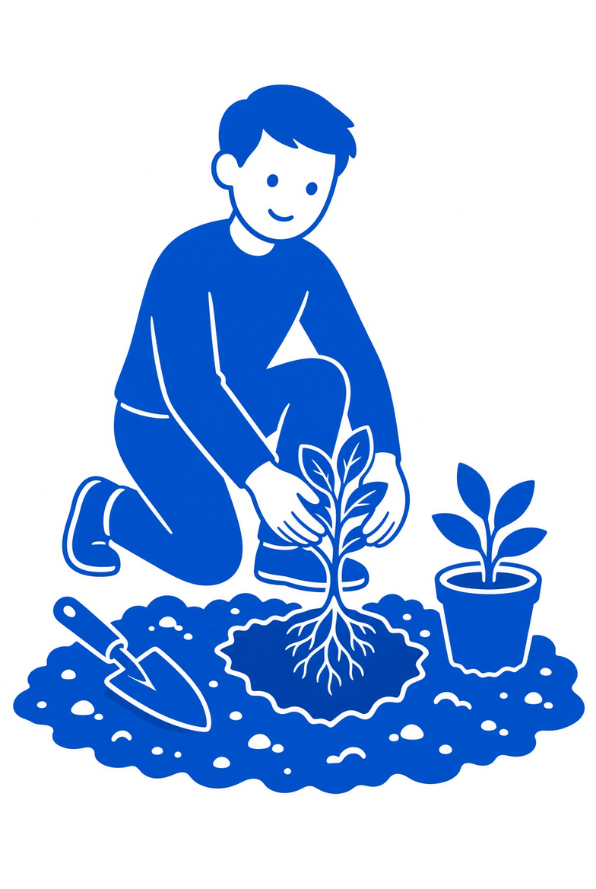
planten
to plant
regelmatigrang 1321Plants & farminggetekend
- Scene
- one adult kneels in a garden bed and presses a small plant with its root ball into a hole in the soil with both hands, the roots half in and half out of the dark earth. A hand trowel lies on the soil and a second plant waits in its pot.
- Must read
- a small plant's roots halfway into a fresh hole in the soil.
- Avoid
- a seedling already standing upright with the arms lifted beside it (groeien); small seeds scattered over bare soil (zaaien); a spade pushed into a mound of earth (begraven); a pot standing on a windowsill; flowers in every colour.
- Contrast
- Pair with zaaien. Same prepared bed: one rooted plant goes into a hole here, a handful of seeds flies from an open hand there.
- Alt text
- Twee handen leggen een stekje met de wortels in een vers gat in de tuinaarde.
- Example
- Wij planten bloemen in de tuin.
We plant flowers in the garden.
planten.png · rang 1321 · A1 regelmatig · lexicon woorden.tsv
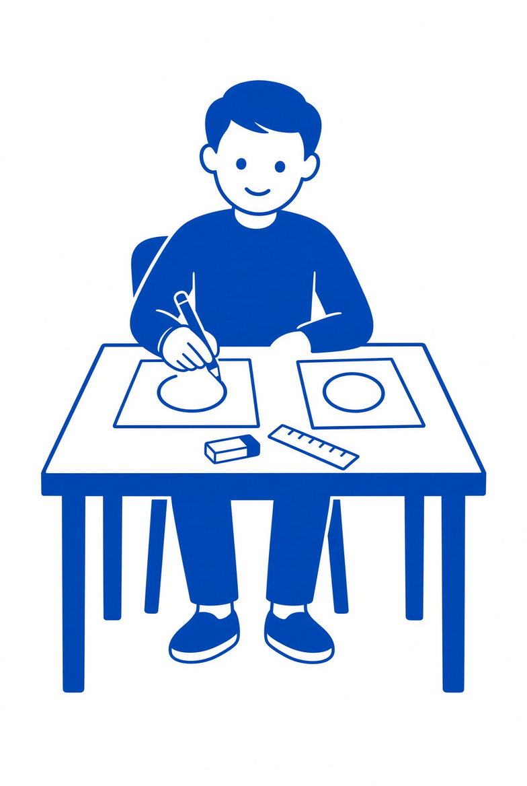
tekenen
to draw
regelmatigrang 1329Arts & mediagetekend
- Scene
- one adult sits at a plain table with a pencil in one hand pressed to a sheet of paper, drawing one bold round shape; beside the pencil lie an eraser and a ruler, and a second sheet shows the same shape already drawn in outline.
- Must read
- one pencil point down on a sheet with a rounded shape partly drawn.
- Avoid
- one adult filling in printed shapes with crayons (kleuren); a brush on an upright white canvas with paint pots (schilderen); a person with an eye to a microscope (onderzoeken); a finger held up beside an open mouth (antwoorden); printed letters on the paper.
- Contrast
- Pair with schilderen. Same maker at work: a pencil point draws a line on paper here, a loaded brush lays paint on a canvas there.
- Alt text
- Iemand trekt met een potlood een ronde vorm op papier, met een gum en liniaal ernaast.
- Example
- Mijn dochter tekent graag paarden.
My daughter likes drawing horses.
tekenen.png · rang 1329 · A1 regelmatig · lexicon woorden.tsv
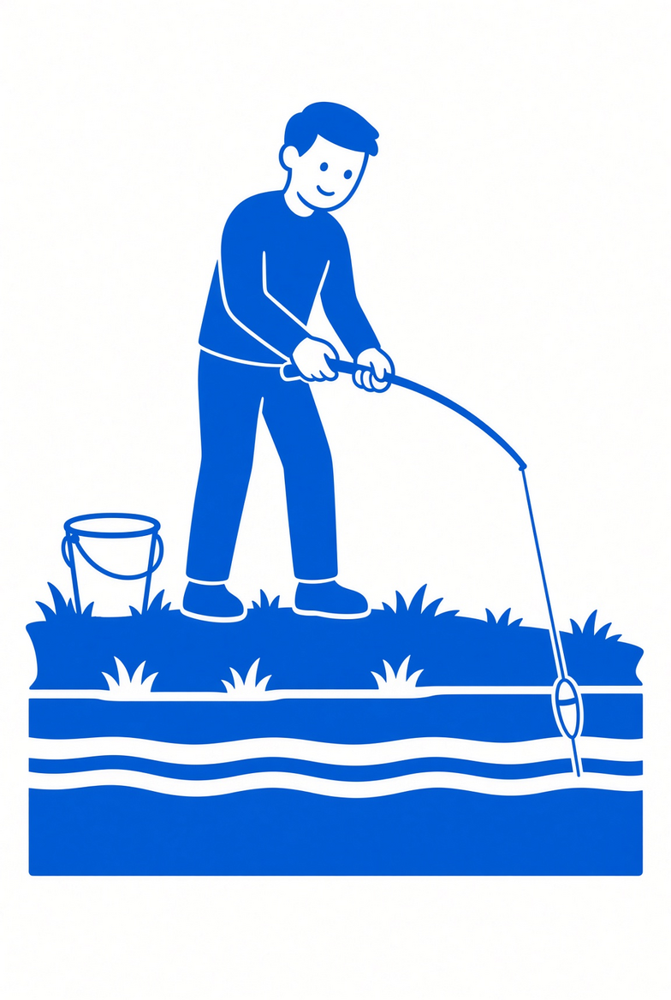
vissen
to fish
regelmatigrang 1373Animalsgetekend
- Scene
- one adult stands on a riverbank bent forward with both hands on a long fishing rod, the line running down into the water and a float visible on the surface; a small bucket stands behind on the grass. The water is a plain band, not a sea.
- Must read
- a taut rod bent forward over water with a float on the surface.
- Avoid
- an adult with arms out swimming in open water (zwemmen); a boat with a net lifted (varen); a fish already hanging on the line; a fish in a bucket; a person in a rowing boat.
- Alt text
- Iemand staat voorover aan de waterkant met beide handen aan een hengel en een dobber op het water.
- Example
- Mijn opa gaat zaterdag vissen.
My grandfather is going fishing on Saturday.
vissen.png · rang 1373 · A1 regelmatig · lexicon woorden.tsv
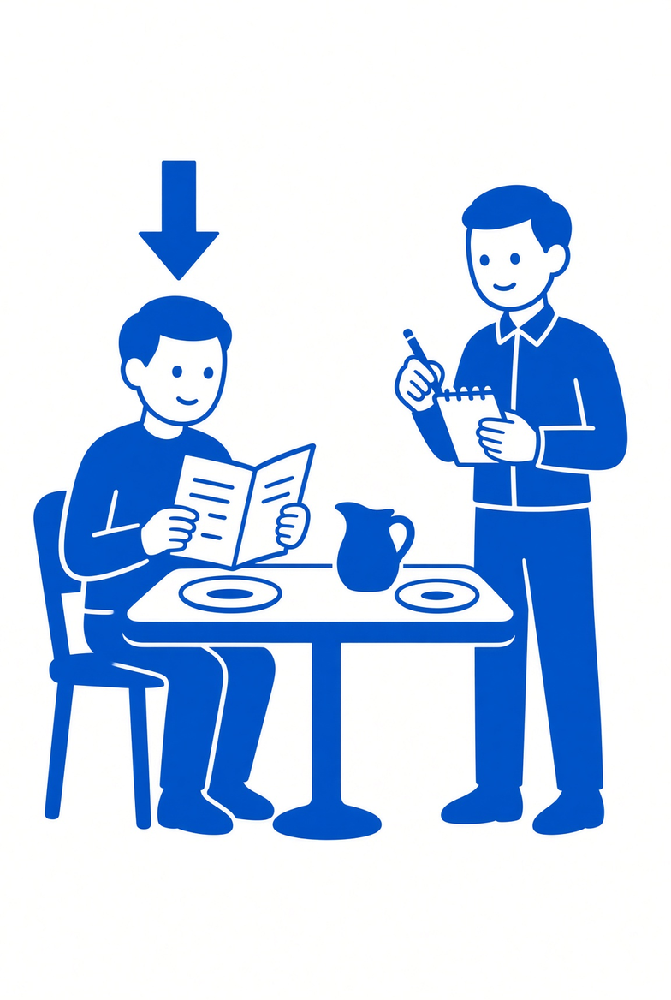
bestellen
to order
regelmatigrang 1405Communication & languagegetekend
- Scene
- one adult sits at a restaurant table with an open menu in both hands, one finger resting on a line, looking up at a second adult standing beside the table with a small notebook and a pencil ready. Plates and a jug are on the table. Above the head of the seated adult ordering floats one bold solid cobalt arrow pointing straight down at the head, with a clear white gap between arrow tip and hair; it marks who performs the verb. The other person has no arrow. No text.
- Must read
- an open menu held up while someone with a notebook writes.
- Avoid
- a folded newspaper held up in a chair (lezen); an envelope pushed into a slot (sturen); a tray carried between two tables (dienen); a plate of food already on the table (eten); a till with coins (betalen).
- Alt text
- Iemand wijst in een open menu aan en kijkt op naar iemand met schrift en potlood.
- Example
- Wij bestellen twee koffie en een broodje.
We order two coffees and a bread roll.
bestellen.png · rang 1405 · A1 regelmatig · lexicon woorden.tsv
geen beeld
zakken (examen)
to fail (an exam)
regelmatigrang 1519Movement & position
- Scene
- Two students sit at neighbouring desks, each with one blank results sheet in front of them. The student on the left slumps with the head hanging and a hand pressed to the forehead. The student on the right raises both arms and smiles. A pen lies on each desk. No letters or numbers on the sheets.
- Must read
- one slumped student beside a student cheering with both arms up.
- Avoid
- a student holding a sheet with a big green tick, arms raised (slagen); a person sinking to the knees on the floor (zakken); a student writing at an exam desk (schrijven); a teacher handing over a diploma (geven); a shrug.
- Alt text
- Twee studenten zitten naast elkaar met een blad; de een hangt terneergeslagen met het hoofd, de ander steekt blij beide armen omhoog.
- Example
- Hij is gezakt voor zijn rijexamen.
He failed his driving test.
zakken-examen.png · rang 1519 · A1 regelmatig · lexicon woorden.tsv
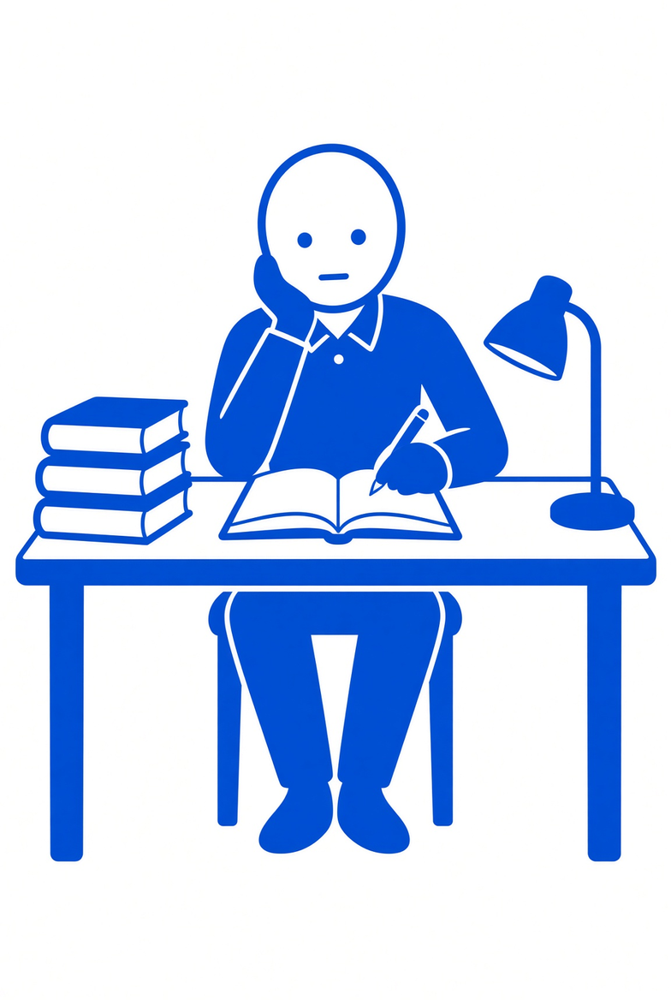
studeren
to study
regelmatigrang 1575Education & learninggetekend
- Scene
- one adult sits alone at a library table with a thick open book in front of them, elbows on the table and the head propped on one hand, a pen moving on a page of notes; three more closed books are stacked beside it and a lamp stands on the table.
- Must read
- one adult alone at a table with an open book and a pen writing notes.
- Avoid
- two people bent over one book with a finger on the page (leren); one adult at a laptop at a desk (werken); a framed picture looked at on a wall (bekijken); a classroom with a blackboard; letters on the page.
- Alt text
- Iemand zit alleen aan een tafel met een dik open boek, hoofd op een hand en pen in de andere.
- Example
- Zij studeert geneeskunde in Leiden.
She studies medicine in Leiden.
studeren.png · rang 1575 · A1 regelmatig · lexicon woorden.tsv
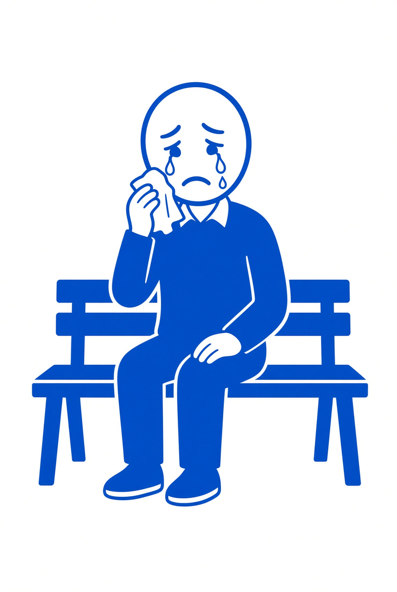
huilen
to cry
regelmatigrang 1615Emotion & feelinggetekend
- Scene
- one adult sits on a bench with tears running down both cheeks, the mouth turned down and the eyebrows raised in the middle, one hand holding a crumpled tissue near the face. Nobody else is in the picture.
- Must read
- tears running down the cheeks of a downturned face.
- Avoid
- tears with a wide open laughing mouth (lachen); a wide yawn with the eyes shut (gapen); knuckles rubbing tired eyes (moe zijn); raindrops on the face under a cloud (regenen).
- Contrast
- Pair with lachen. Same face at the same size: the face turns down with tears on the cheeks here, the head tips back with the mouth wide and the eyes shut there.
- Alt text
- Iemand zit op een bank; tranen lopen over beide wangen en een hand houdt een zakdoek vast.
- Example
- Het kind huilt om zijn speelgoed.
The child cries over his toy.
huilen.png · rang 1615 · A1 regelmatig · lexicon woorden.tsv
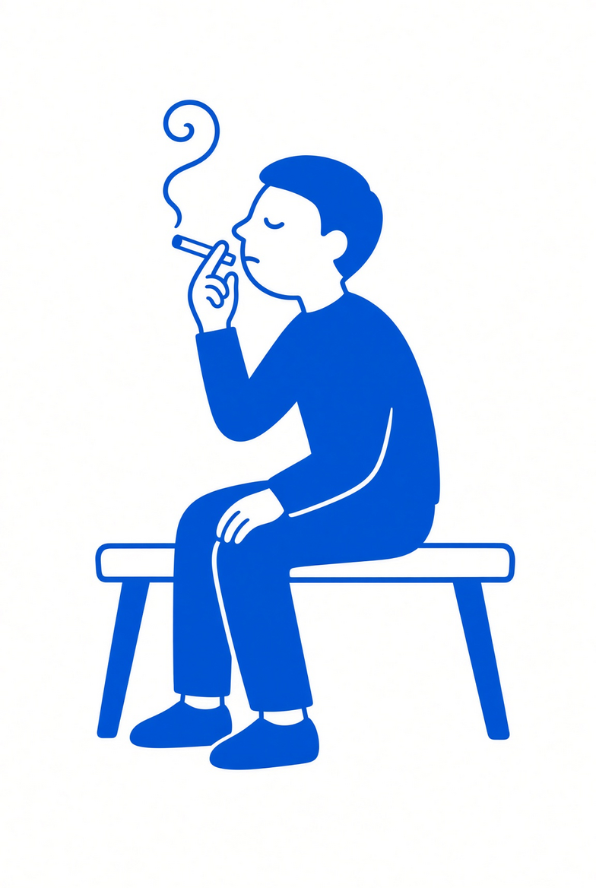
roken
to smoke
regelmatigrang 1664Abstract & generalgetekend
- Scene
- one adult sits on a plain bench in profile with one hand raised to the mouth holding a lit cigarette between two fingers; a thin curl of smoke rises from the tip, and the other hand rests on the knee. Nothing else in the picture.
- Must read
- a cigarette between two fingers at the mouth with a thin curl of smoke.
- Avoid
- a cup raised to the mouth with steam (drinken); a pipe-shaped bubble toy; a fire or flames; a crossed-out cigarette sign; a person coughing into a fist.
- Alt text
- Iemand zit op een bank en houdt een brandend sigaretje bij de mond; een dun wolkje stijgt op.
- Example
- Mijn oom rookt buiten op het balkon.
My uncle smokes outside on the balcony.
roken.png · rang 1664 · A1 regelmatig · lexicon woorden.tsv
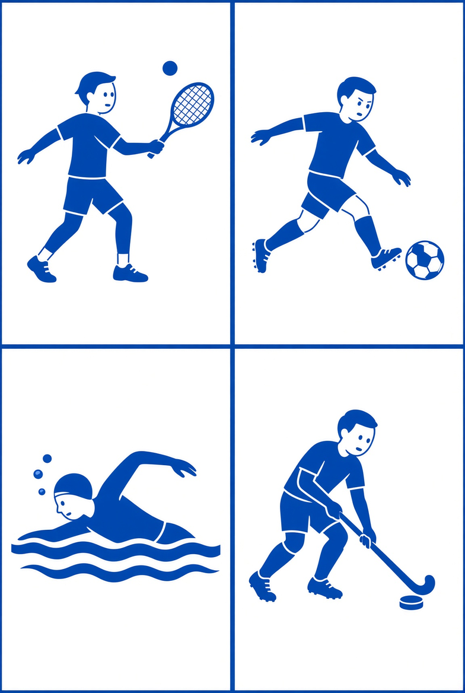
sporten
to play sport, to exercise
regelmatigrang 1771Sport & gamesgetekend
- Scene
- one picture divided into four equal panels in a two-by-two grid by thick cobalt lines, each panel holding one simple sport pictogram with a whole figure from head to feet: top left a tennis player swinging a racket at a ball, top right a footballer kicking a ball, bottom left a swimmer crawling in water drawn as a wavy line, bottom right a hockey player with a stick hitting a puck; nothing else, no text.
- Must read
- four small panels showing four different sports.
- Avoid
- a person running with both feet off the ground (rennen); a coach with a stopwatch beside a ball and cones (trainen); a person asleep on a mat (slapen); a person digging (graven); a barbell.
- Alt text
- Vier vakjes met een tennisser, een voetballer, een zwemmer en een hockeyspeler.
- Example
- Ik sport twee keer per week.
I exercise twice a week.
sporten.png · rang 1771 · A1 regelmatig · lexicon woorden.tsv
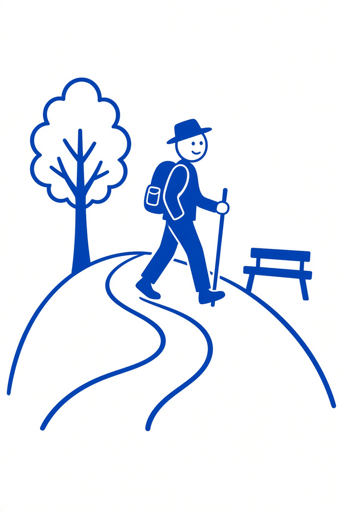
wandelen
to go for a walk
regelmatigrang 1780Movement & positiongetekend
- Scene
- one adult strolls at an easy pace along a winding path over a gentle hill, hands behind the back, a small backpack and a hat, one walking stick planted in the ground at the front; a single tree and a bench stand beside the path. Seen from the side, caught mid-step.
- Must read
- a relaxed stroller with a walking stick on a winding country path.
- Avoid
- a brisk stride on empty ground with swinging arms (lopen); both feet off the ground (rennen); a bicycle beside the person (fietsen); a rope and a steep cliff (klimmen); a dog on a lead.
- Contrast
- Pair with fietsen. The same upright posture on the move: the feet step on the ground under a walking stick here, they push pedals there.
- Alt text
- Iemand slentert met een stok en een rugzakje over een kronkelend pad langs een boom en een bank.
- Example
- Wij wandelen zondag door het bos.
We are going for a walk in the woods on Sunday.
wandelen.png · rang 1780 · A1 regelmatig · lexicon woorden.tsv
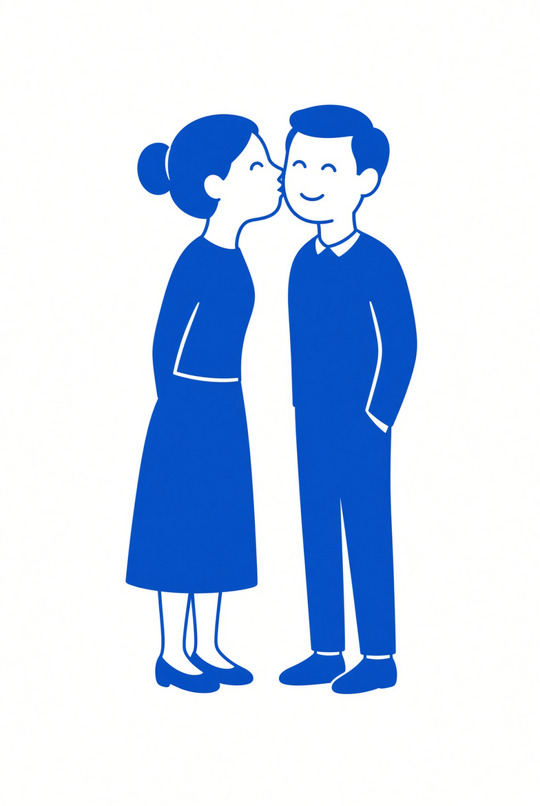
kussen
to kiss (on the cheek)
regelmatigrang 1800Abstract & generalgetekend
- Scene
- two adults stand close and face each other in profile; one leans in with closed eyes and presses the lips lightly to the other's cheek, while the other stays still with a slight smile. Nothing else in the picture, no heart symbols.
- Must read
- one adult pressing the lips to another's cheek.
- Avoid
- a hug with both arms round the shoulders (omarmen); a handshake (groeten); two faces near each other with a speech bubble (praten); hearts or flowers; two adults who are pressing noses.
- Alt text
- Twee mensen staan dicht tegenover elkaar; de een drukt met gesloten ogen de lippen tegen de wang van de ander.
- Example
- Zij komt mij op de wang kussen.
She comes to kiss me on the cheek.
kussen.png · rang 1800 · A1 regelmatig · lexicon woorden.tsv
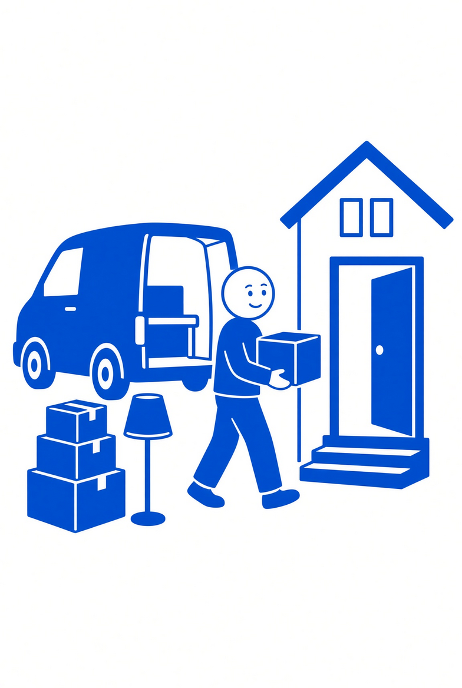
verhuizen
to move (house)
regelmatigrang 1809House & homegetekend
- Scene
- one adult stands at the open back of a small van carrying one cardboard box in both arms towards a house front door; more stacked boxes and a floor lamp stand beside the van, and the house door is open. The adult looks at the door.
- Must read
- a person carrying a box from a loaded van towards a house door.
- Avoid
- a box passing from hand to hand between two people (geven); a person walking with a suitcase to a train (reizen); a person assembling a box (maken); a for-sale board; a crowd of movers.
- Alt text
- Iemand draagt een kartonnen doos uit een bestelwagen vol dozen naar de open voordeur van een huis.
- Example
- Wij gaan volgende maand verhuizen.
We are moving house next month.
verhuizen.png · rang 1809 · A1 regelmatig · lexicon woorden.tsv
geen beeld
drukken (knop)
to press
regelmatigrang 1880Abstract & general
- Scene
- One adult stands in front of a wall panel and presses a single round button with the tip of one index finger, the button glowing. The arm is stretched out and the adult looks at the button. No lift doors, no second person, no text or numbers on the panel.
- Must read
- one finger pressing a glowing round button on a wall.
- Avoid
- a printer pushing out a sheet of paper (drukken); a hand turning a round tap (draaien); a fist knocking on a door (kloppen); a finger pressing a doorbell on a front door (bellen); a hand pulling a lever.
- Alt text
- Een volwassene steekt een arm uit en duwt met één vinger op een rond, oplichtend knopje in een muur.
- Example
- Druk maar op de groene knop.
Just press the green button.
drukken-knop.png · rang 1880 · A1 regelmatig · lexicon woorden.tsv
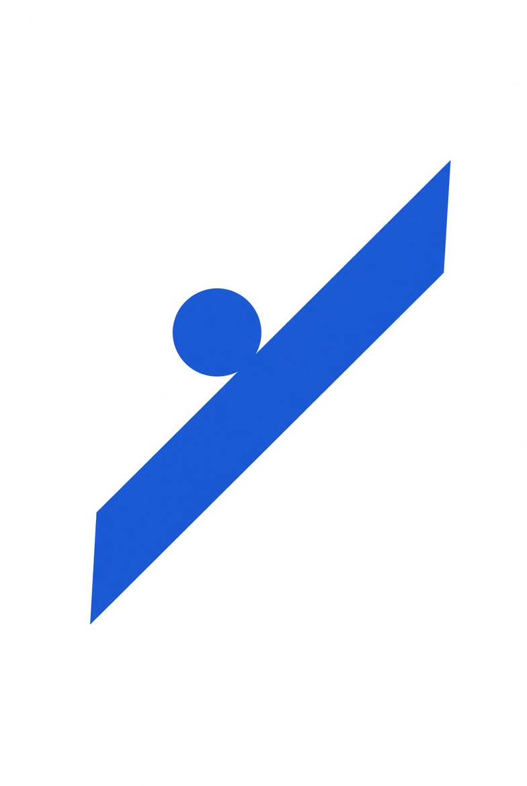
rollen
to roll
regelmatigrang 1895Food & drinkgetekend
- Scene
- no person: a plain plank ramp slopes down to the left, and one single plain solid ball sits on the ramp surface about halfway down; nothing else in the picture, no floor marks, no motion lines.
- Must read
- a ball on a sloping plank.
- Avoid
- a ball thrown through the air (gooien); a person kicking a ball (voetballen); a person pressing dough flat with a rolling pin (bakken); a wheel on a bicycle (fietsen); speed lines or dust puffs.
- Alt text
- Een bal ligt halverwege op een schuine plank.
- Example
- De bal rolt van de tafel.
The ball rolls off the table.
rollen.png · rang 1895 · A1 regelmatig · lexicon woorden.tsv
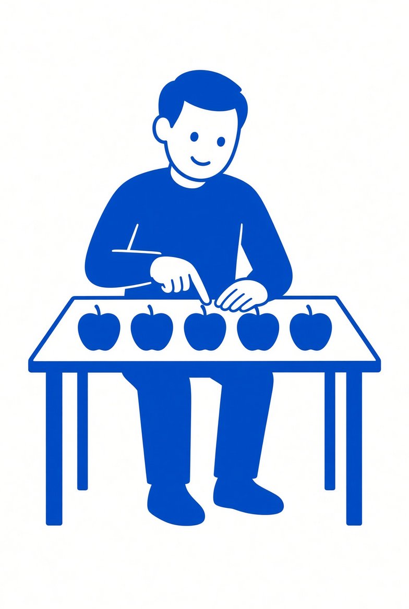
tellen
to count (things)
regelmatigrang 1896Quantity & measuregetekend
- Scene
- one adult sits at a plain table with a straight row of five apples in front of them; the index finger of one hand touches the third apple, the other hand rests flat beside the row, and the eyes follow the finger. No digits, no pad.
- Must read
- a fingertip touching the third apple in a row of five.
- Avoid
- a bead pushed along an abacus rod (rekenen); a hand taking an apple from the row (pakken); a person writing on paper (schrijven); a pile of coins (betalen); a basket full of apples.
- Alt text
- Iemand zit aan een tafel en wijst met een vinger de derde appel aan in een rij van vijf.
- Example
- Het kind kan al tot twintig tellen.
The child can already count to twenty.
tellen.png · rang 1896 · A1 regelmatig · lexicon woorden.tsv
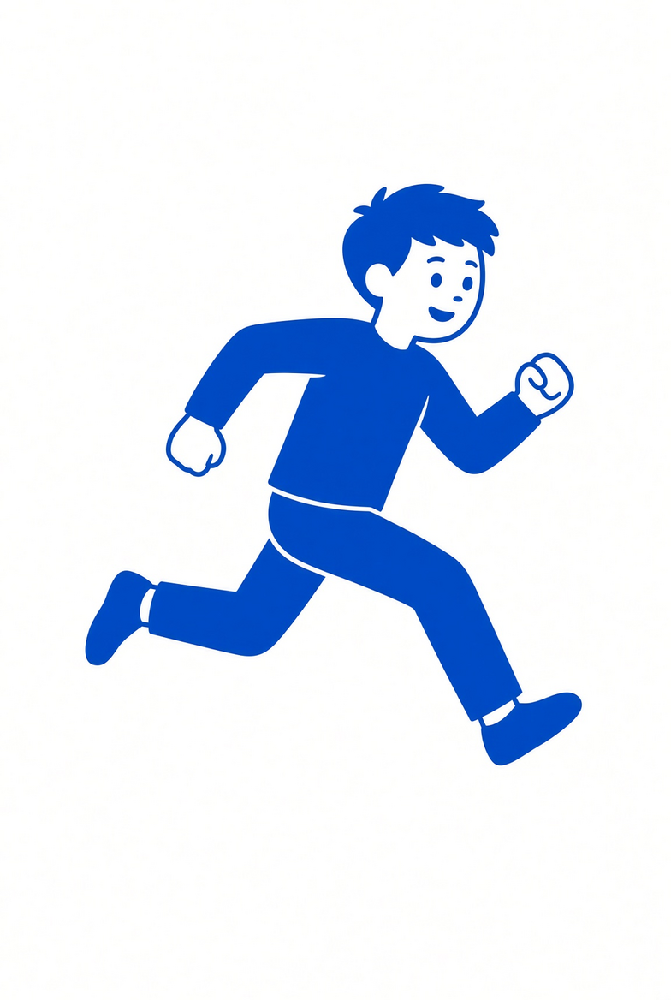
rennen
to run
regelmatigrang 1942Movement & positiongetekend
- Scene
- one adult runs from left to right over empty ground, caught with both feet off the ground, the body leaning forward, the arms bent and pumping in opposition, mouth slightly open and eyes ahead. Nothing else is in the picture.
- Must read
- both feet off the ground with the body leaning forward at speed.
- Avoid
- one foot flat on the ground and the other just lifting, the back upright (lopen); a person upright on a bicycle (fietsen); a straight raised knee and a stiff swinging arm (marcheren); a stopwatch; speed lines or dust puffs.
- Contrast
- Pair with lopen. Same adult on the same path: both feet leave the ground with a forward lean here, one foot stays down there.
- Alt text
- Een volwassene is met beide voeten van de grond en leunt voorover met gebogen, zwaaiende armen.
- Example
- De jongen rent snel naar de bushalte.
The boy runs quickly to the bus stop.
rennen.png · rang 1942 · A1 regelmatig · lexicon woorden.tsv
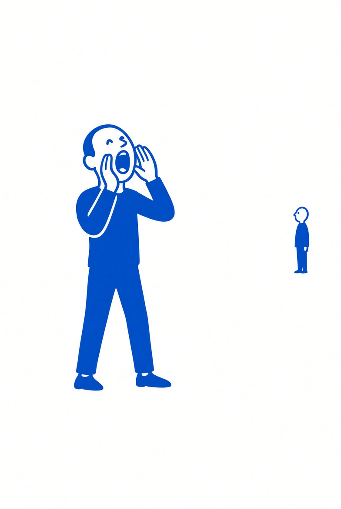
schreeuwen
to shout
regelmatigrang 2050Communication & languagegetekend
- Scene
- one adult stands with feet apart and both hands cupped around the mouth, the head thrown back and the mouth wide open, looking across empty ground at a small distant figure at the right edge of the frame. No speech bubble, no letters.
- Must read
- two cupped hands at a wide-open mouth aimed at a far-off figure.
- Avoid
- two adults facing each other close by with a bar each above the head (praten); a mouth open in a song with a microphone (zingen); a face with tears on the cheeks (huilen); a hand cupped behind an ear (luisteren); speech bubbles or lettering.
- Alt text
- Een volwassene houdt beide handen als trechter voor een wijd open mond en kijkt naar een verre figuur.
- Example
- De supporters schreeuwen luid in het stadion.
The supporters shout loudly in the stadium.
schreeuwen.png · rang 2050 · A1 regelmatig · lexicon woorden.tsv
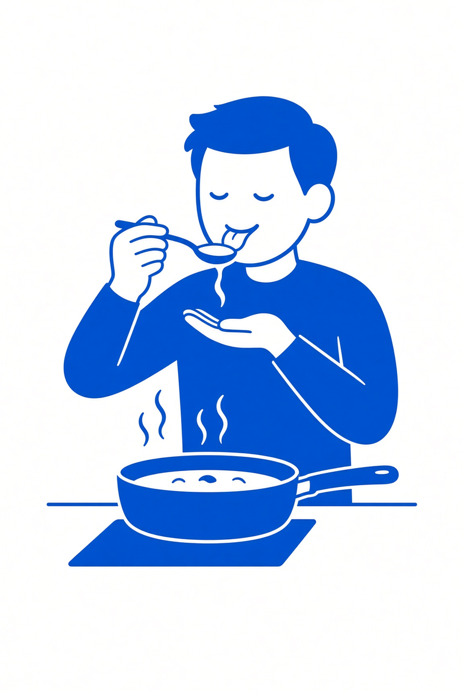
proeven
to taste
regelmatigrang 2528Food & drinkgetekend
- Scene
- one adult stands at a kitchen worktop with eyes closed, lips and tongue just taking the tip of a spoon that half rises out of a steaming pan; the other hand is cupped underneath to catch a drip. The face shows the taste arriving and nobody else is in the room.
- Must read
- lips touching a raised spoon above a steaming pan.
- Avoid
- the spoon tipped fully into an open mouth and the head back (eten); a hand fanning the air above the pan (ruiken); a thumbs up held beside a plate; a nod of the head (keuren); a full plate held up to the viewer.
- Contrast
- Pair with ruiken. Same kitchen and the same cook: the tongue meets a raised spoon here, the nose goes close to the loaf there.
- Alt text
- Een volwassene heeft de ogen dicht en de lippen raken net de lepel boven een dampende pan.
- Example
- Mag ik de soep even proeven?
May I taste the soup?
proeven.png · rang 2528 · A1 regelmatig · lexicon woorden.tsv
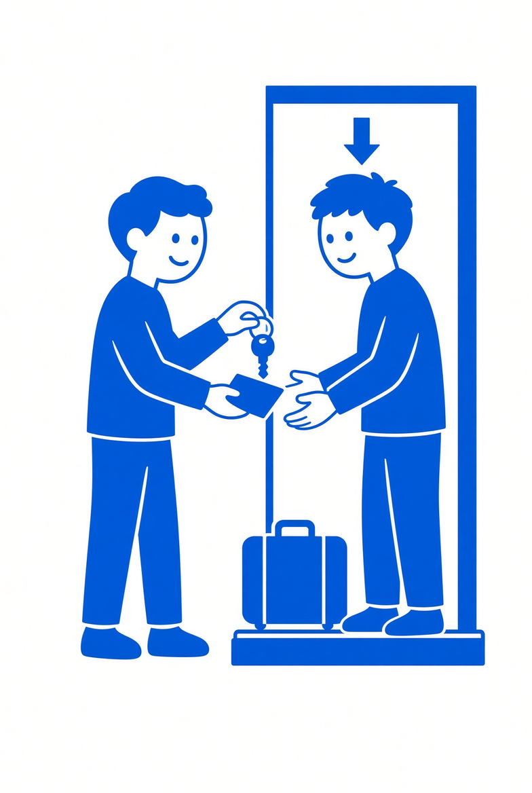
huren
to rent
regelmatigrang 2600House & homegetekend
- Scene
- one adult hands over a key on a plain round ring and a folded lease to a second adult whose open hand is already closing on the key; the second adult stands on a doorstep inside the door frame, and a suitcase waits on the step below. Both look at the key. Above the head of the person TAKING the key floats one bold solid cobalt arrow pointing straight down at the head, with a clear white gap between arrow tip and hair; it marks who performs the verb. The other person has no arrow. No text. The arrow floats above the head of the person standing on the doorstep and receiving the key; the giver on the left has no arrow.
- Must read
- key and lease passing between two pairs of hands at a front door.
- Avoid
- coins pushed across a shop counter (betalen); two adults shaking hands with nothing in them (afspreken); a suitcase alone in an empty room; a sign hanging from a door; the key held up in triumph (vinden).
- Alt text
- Bij een voordeur geeft iemand een sleutel en een gevouwen contract aan een nieuwkomer met een koffer.
- Example
- Wij huren een klein appartement in Utrecht.
We rent a small flat in Utrecht.
huren.png · rang 2600 · A1 regelmatig · lexicon woorden.tsv
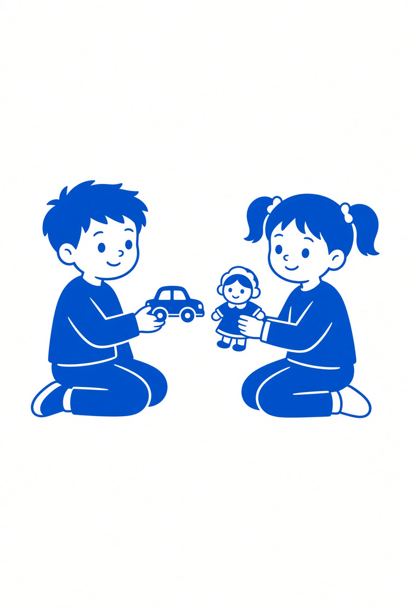
ruilen
to swap
regelmatigrang 3256People & relationsgetekend
- Scene
- two children sit facing each other on the floor; each holds out one toy to the other at the same moment, a toy car from the left and a small doll from the right, the arms crossing in the middle so both toys are halfway across.
- Must read
- two toys passing in opposite directions between two children at once.
- Avoid
- one box going one way between two adults (geven); one child snatching a toy (pakken); two children holding one toy between them (delen); a coin handed over for a toy (kopen).
- Alt text
- Twee kinderen steken elkaar tegelijk een speeltje toe: een autootje naar rechts, een pop naar links.
- Example
- Wil je je boterham met mij ruilen?
Do you want to swap sandwiches with me?
ruilen.png · rang 3256 · A1 regelmatig · lexicon woorden.tsv
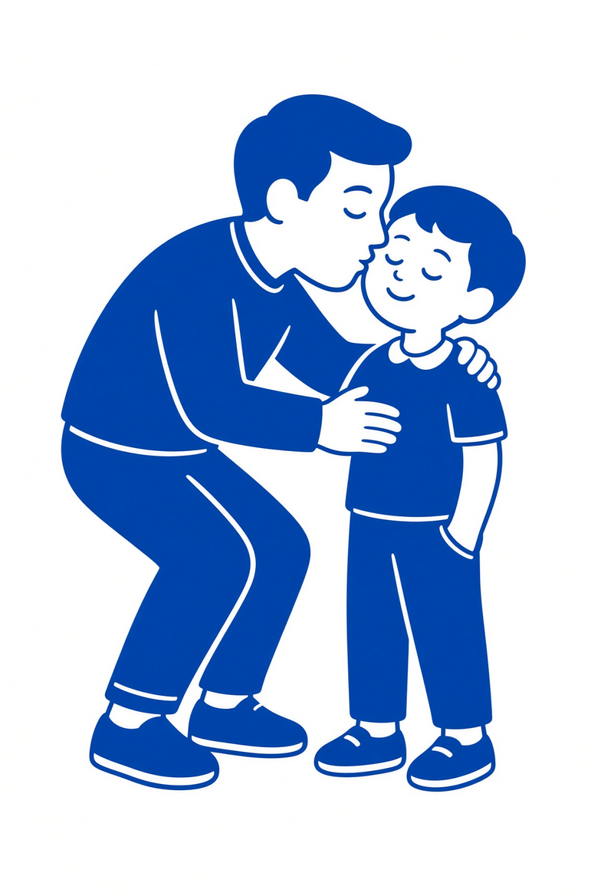
zoenen
to kiss
regelmatigrang 3364People & relationsgetekend
- Scene
- one adult bends down and presses a kiss on the cheek of a small child; the child stands with eyes closed and a small smile, one hand on the adult's shoulder. Plain background, nobody else.
- Must read
- lips touching a child's cheek.
- Avoid
- two people with arms round each other (knuffelen); a mouth close to an ear (fluisteren); a cheek pinched between finger and thumb (knijpen); two adults kissing on the mouth.
- Alt text
- Een volwassene buigt voorover en drukt de lippen op de wang van een klein kind.
- Example
- De bruid en bruidegom zoenen na de ceremonie.
The bride and groom kiss after the ceremony.
zoenen.png · rang 3364 · A1 regelmatig · lexicon woorden.tsv
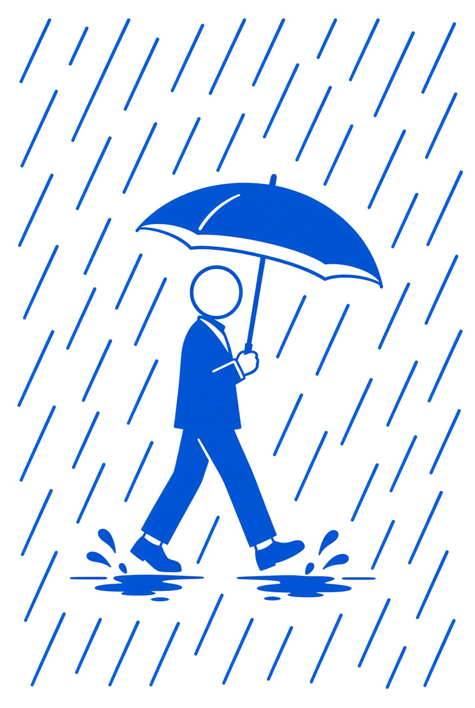
regenen
to rain
regelmatigrang 4003Nature & weathergetekend
- Scene
- one adult walks along an empty pavement under an open umbrella while straight slanting rain strokes fill the whole picture down to the ground; small splashes jump up from two puddles at the feet. There is no roof, tree or shelter anywhere and nobody else is in the picture.
- Must read
- slanting rain strokes filling the frame around a person under an umbrella.
- Avoid
- a person standing dry under a roof beside the rain (schuilen); a hat flying off in the wind (waaien); water running off a coat onto a doormat (druipen); a shower head over a person (douchen).
- Alt text
- Iemand loopt met een open paraplu over de stoep; overal vallen strepen water en er spatten plassen op.
- Example
- Het regent al de hele dag.
It has been raining all day.
regenen.png · rang 4003 · A1 regelmatig · lexicon woorden.tsv
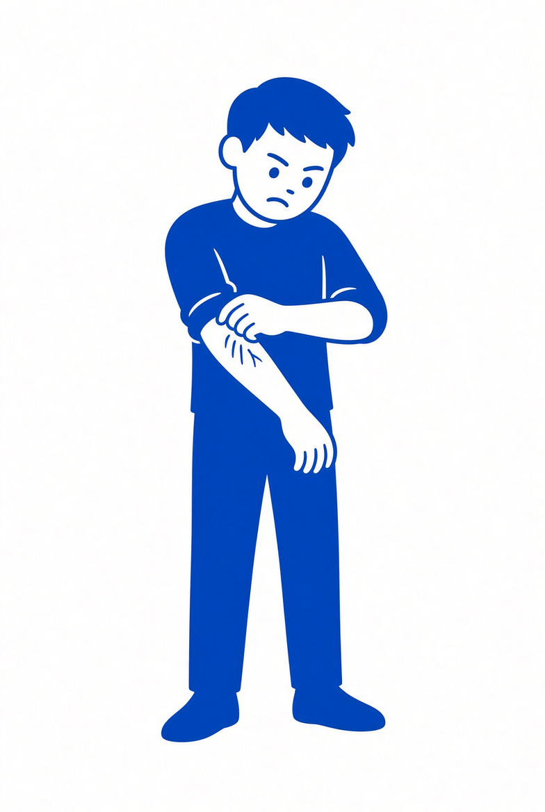
krabben
to scratch
regelmatigrang 5204Body & healthgetekend
- Scene
- one adult stands and scratches one forearm with the fingernails of the other hand, the face screwed up; short marks show where the nails have passed. The sleeve is pushed up to the elbow and nobody else is in the picture.
- Must read
- fingernails scratching a forearm.
- Avoid
- a hand moving along a cat's back (strelen); a bandage round an arm (verbinden); two palms rubbed together (wrijven); a cat clawing a post.
- Alt text
- Iemand haalt met de nagels van de ene hand over de onderarm, met een vertrokken gezicht.
- Example
- De kat krabt aan de deur.
The cat scratches at the door.
krabben.png · rang 5204 · A1 regelmatig · lexicon woorden.tsv